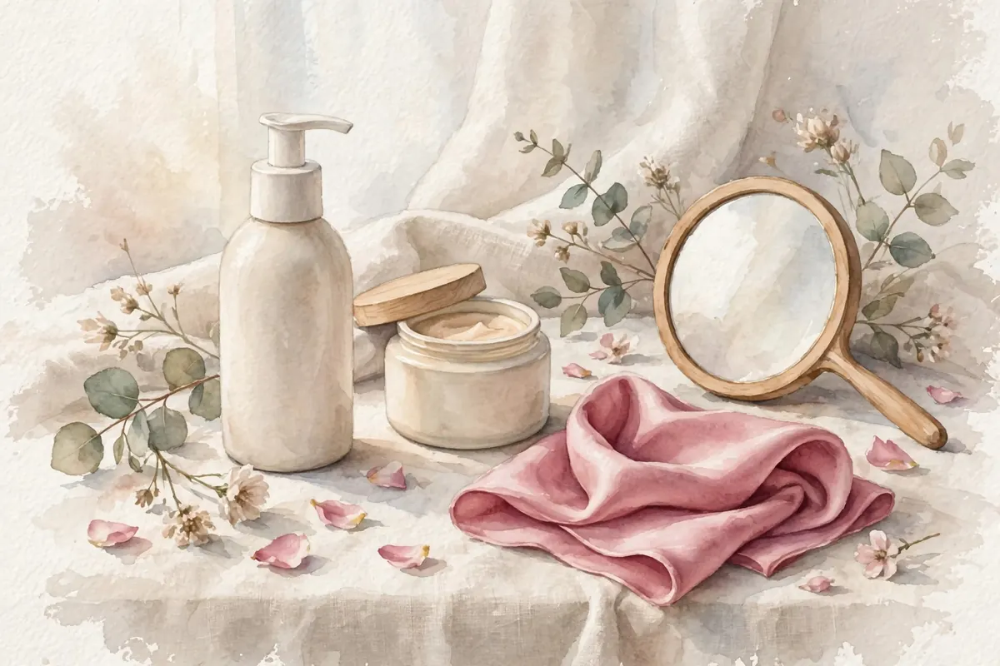

トップ ＞ スキンケア ＞ 顔から首・耳のうしろまで：伸ばす範囲の考え方
顔から首・耳のうしろまで：伸ばす範囲の考え方

施術をしていると、顔のケアは丁寧でも、首から下は手つかず、という方が多いことに気づきます。顔と首は地続きの皮膚であり、境目でケアが切れてしまうのは惜しいところです。この記事では、伸ばす範囲の考え方を整理します。
境目で切れる理由は「量と順番」
首まで伸びない一番の理由は、顔の分だけで量が終わってしまうことです。顔用に取った量を顔で使い切れば、当然、首には回りません。解決は単純で、最初から「顔と首の分」として量を取ることです。表示の適量が顔を前提にしている場合は、首の分を少量継ぎ足す形にします。
順番も大切です。顔の最後に首、と決めておけば、習慣として定着します。塗る範囲の地図を自分の中で決めておくことが、塗り残しを防ぐ基本です。鏡で境目を確認しながら進めると、範囲の感覚がつかめます。
塗り残しの多い場所：耳のうしろとあごの下
耳のうしろは、洗うケアでも付けるケアでも残りやすい場所です。髪に隠れて見えにくく、手も届きにくい。意識して指を運ぶ必要があります。あごの下から首の前面も、顔の正面ばかり見ていると忘れがちな範囲です。
手に余った分を使う場所として、この2か所は適しています。余りを手の甲で終わらせず、耳のうしろと首に運ぶ習慣を持つと、無駄なく範囲が広がります。日焼け止めを塗る日も、同じ範囲を意識すると、塗り残しの差が出にくくなります。
首に使うときの調整
首の皮膚は顔より薄いとされ、使うアイテムによっては顔用が想定されていない場合もあります。商品の表示に「顔専用」などの案内がある場合は、それに従ってください。首にも使えるものであれば、顔と同じ流れで構いません。
首に塗るときは、下から上へ手を運ぶ動きが一般的です。力を入れず、手のひら全体で包むように当てるのが基本です。範囲を広げることは、手順を増やすことではありません。今の量と動きの延長でできる工夫です。
朝のケアと、服の襟元との関係
首までケアを伸ばす習慣は、朝の場面でも考える点があります。仕上げのアイテムが襟元に触れると、服に付くことがあります。ケアをしてから服を着る順番にする、襟元の開いた服の日は量を調整する、といった小さな工夫で防げるものです。順番の設計は、棚の並べ方と同じく、毎日の動きを決める要素です。
日焼け止めを使う日は、首と耳のうしろまでが「塗る範囲の地図」に入ります。顔だけ塗って首が範囲外、という状態は、塗り残しの差として現れます。範囲の地図は、朝と夜で共通のものにしておくと、どちらの場面でも迷いません。
施術では、デコルテまで含めて触れることが多く、首まわりの状態は顔と同じくらい目に入ります。自宅のケアで首まで範囲を広げることは、施術の考え方を家庭に持ち帰るようなものです。特別な技術は要りません。範囲の地図を広げるだけで、ケアの届く場所が変わります。
範囲を広げた分、使う量も少し増えます。月の使用量が変わるので、使い切りのペースも見直しの対象になります。範囲、量、予算はつながっています。一つの工夫が、ほかの設計にも波及する。それが、ケア全体を考える面白さです。
首まわりのケアでは、髪の毛の扱いも関係します。長い髪は、ケアのときに束ねておくと、首に髪が張り付かず、手順が進めやすくなります。洗面所に髪をまとめる道具を置いておくことも、段取りの一部です。
アクセサリーを着ける方は、外してからケアをする順番にしておくと、アイテムが付着する心配が減ります。小さな順番の設計が、身の回りのものを守ることにもつながります。
範囲を広げる工夫は、特別なアイテムを増やすことではありません。今ある手順の延長にあります。今日の夜から、耳のうしろまで手を運ぶことを、一度意識してみてください。
セラフィナ「顔のついでに、首まで伸ばす習慣だね。耳のうしろも忘れずに」

セラフィナ｜美容の道具箱の案内役
「量と表示が分かれば、美容は失敗しない。」——セラフィナと白猫のモコが、買う前のチェックポイントを案内します。綺麗になりたい気持ちに正直に、でも表示は冷静に読むのが、このサイトの約束です。